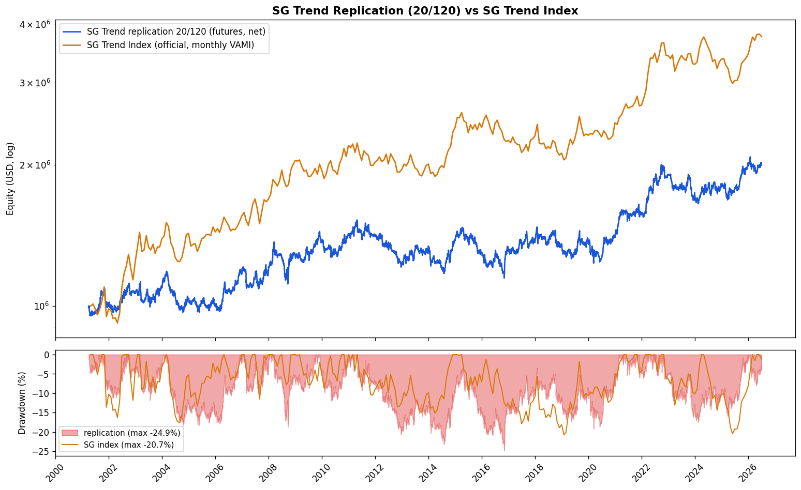

🔬 複驗 · 風格複製成立、報酬水準不及
忠實複製 SG Trend 的訊號風格，不是發明新策略——複製到的是「風格」，不是「報酬水準」
這是一份 replication（複驗），所有規格數字皆固定自 SG Trend Index／SG Trend Indicator 公開文獻，零參數搜索。
快慢均線交叉訊號、inverse-vol 權重、10% 組合 vol target、單資產風險貢獻上限 20%、t+1 執行滯後——全部照文獻走。
三條速度點（20/120、60/200、120/250）都跑完整回測，headline 固定為官方的 20/120，不事後挑最好的當門面。
結論：風格複製成立——對 SG 官方月報酬相關 0.647（驗收 0.60–0.75 過關）、2022 年 +21.92%（官方 +27.35%，方向與量級同調）；
但報酬水準遠不及（CAGR 2.79% vs SG 指數 5.39%），且驗收第三條（2024–25 深回撤）不通過。
這頁是 美股回測 之外的「edge 存活研究」候選之一，價值在 crisis alpha 與對股票的去相關，不在絕對報酬。
驗收結果
三條驗收條件在跑回測之前就寫死、不事後改門檻，照實對答案：通過 2 條，第三條不通過並附診斷。
| # | 驗收條件 | 文獻宣稱／目標 | 實測（期貨版 20/120） | 判定 |
|---|
| 1 | 月報酬 vs SG Trend Index 官方月頻 Pearson 相關 | 0.60–0.75 | 0.647（重疊 2001-05→2026-06，302 月） | ✅ 通過 |
| 2 | 2022 年報酬大幅正值（官方 +27.35%） | 明顯正 | +21.92% | ✅ 通過 |
| 3 | 2024/5–2025/5 深回撤（官方 −20.4%） | ≤ −15% | −8.45%（該窗最大回撤） | ❌ 不通過 |
驗收 3 不通過的診斷（排查後判定非 bug，而是 universe 廣度 ＋ 波動尺度差）：
① 引擎能產生深回撤（全期 MDD −24.87%、120/250 到 −42.30%），不是被 vol target 抹平；
② SG 該窗回撤是其追蹤的 50+ 市場（農產／軟商品／能源／短率／全球債股／廣度 FX）整體 whipsaw 的長期陰跌；
③ 該窗我的 10 標的月報酬 vs SG 相關僅 ~0.34（全期 0.65），2025-04 關稅月 SG −4.89% 但本組合 +2.85%（黃金／債券部位反而獲利，站在 SG 反方向）；
④ 純波動尺度換算 −20.43%×(10/12.8) ≈ −15.92%，剩餘缺口仍歸 universe 廣度。10 標的無法覆蓋 SG 在該窗的驅動市場——這是誠實的複驗侷限，不是實作錯誤。
核心績效指標（三速度點）
headline 固定 20/120（官方 SG Trend Indicator 速度）。60/200、120/250 為確認性檢驗，照報不挑。
| 速度點 | CAGR | 年化波動 | Sharpe | Sortino | MDD | Calmar | 對 SG 相關 | 成本拖累 |
|---|
| 20/120（headline） | +2.79% | 10.52% | 0.27 | 0.37 | -24.87% | 0.11 | 0.647 | 1.15 pp/年 |
| 60/200 | +3.04% | 10.45% | 0.29 | 0.40 | -29.01% | 0.10 | 0.621 | 0.74 pp/年 |
| 120/250 | +1.09% | 10.44% | 0.10 | 0.14 | -42.30% | 0.03 | 0.462 | 0.66 pp/年 |
年化波動三者皆 ≈ 10%，vol target 命中。headline 平均槓桿 1.87、最大 3.0，平均在場 active 資產 9.0 檔。
20/120 與 60/200 相關落在目標區間；120/250 速度過慢、訊號延遲，與 SG 訊號構成距離較遠（0.462，出區間）。
ETF 對照版（純還原股價，扣現金利率）
SPY／QQQ／TLT／IEF／GLD／DBC／UUP，共同起點約 2007-03。用來檢驗期貨 roll 是否造成方向性偏移。
| 速度點 | CAGR | Sharpe | MDD | Calmar | 對 SG 相關 |
|---|
| 20/120 | +4.75% | 0.45 | -21.62% | 0.22 | 0.623 |
| 60/200 | +4.20% | 0.40 | -26.03% | 0.16 | 0.678 |
| 120/250 | +5.15% | 0.48 | -25.37% | 0.20 | 0.501 |
兩版月報酬相關 0.81–0.88，無災難級分歧——剔除 CL=F／SI=F、改用 USO／SLV 代理有效防堵了審計指出的最大污染源。
但期貨版 CAGR（2.79%）持續低於 ETF 版（4.75%）：ETF 版含 SPY／QQQ／TLT／IEF 這些 2009 後長多趨勢極強的標的，
期貨版含 USO（審計顯示 −7.86%／年）與 SLV 拖累。這是資產組成差，不是同資產的 roll 污染差。
資料審計：兩個標的被剔除
忠實回測的前提是資料乾淨。跑策略前先做資料審計，兩檔期貨連續合約被判不可用。
CL=F（原油）— 剔除
- 原始拼接序列有 +7.85%／年的幻影超額——連續合約拼接低估了 contango（正價差）的滾動損耗。
- 用真實還原股價 USO 取代（2006-04 上市起）。
SI=F（白銀）— 剔除
- 殭屍 bar（stale／重複值）貫穿全期。
- 用真實還原股價 SLV 取代（2006-04 上市起）。
保留的：GC=F（黃金）roll 幻影僅 +0.44%／年，可接受、保留；6J=F 的 2001-12-17 小數點壞 bar 已在 loader 修復（6J 於 2005 才進場，對結果無實質影響，純防禦性處理）。
其餘期貨 roll 幅度小於 3× 日內波動門檻，未造成離群級跳空——但不代表零污染，見侷限節。
淨值與回撤
headline 20/120 權益曲線（log）＋回撤 · 疊 SG Trend Index 月頻 VAMI（正規化到同起點）

誠實侷限
- Roll 未調整——期貨用 yfinance 連續合約 Close 的 pct_change 當 excess return 近似，未做 roll 調整。審計已量化最大污染源（CL=F +7.85%／年）並剔除。
- ETF 混用——期貨版把 USO／SLV（真實 roll-cost ETF）與純期貨並置在同一 universe，已用「扣現金利率」對齊 self-financing 性質，但兩者資料生成過程不同。
- 費用假設——14 bps 往返為固定假設，未隨流動性／波動變動，未計市場衝擊、保證金利息、ETF expense ratio。
- CAGR 遠低於 SG 指數（2.79% vs 5.39%）——「10 標的窄 universe ＋ 10% vol target」的必然結果。本回測目標是複製風格（相關性），不是報酬水準；相關 0.65 達標即成功。
- 單一窗口回撤無法複製——驗收 3 不過的根因是 universe 廣度不足（SG 追蹤 50+ 市場），非 bug。